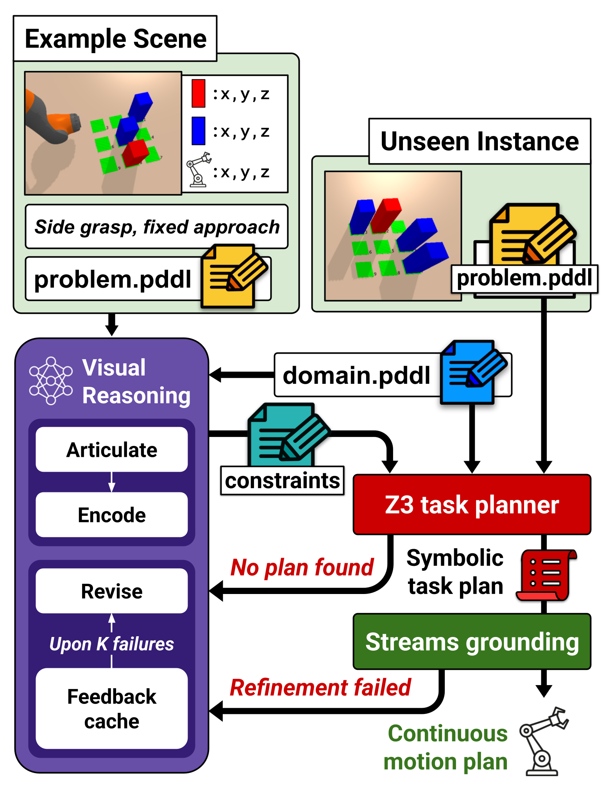
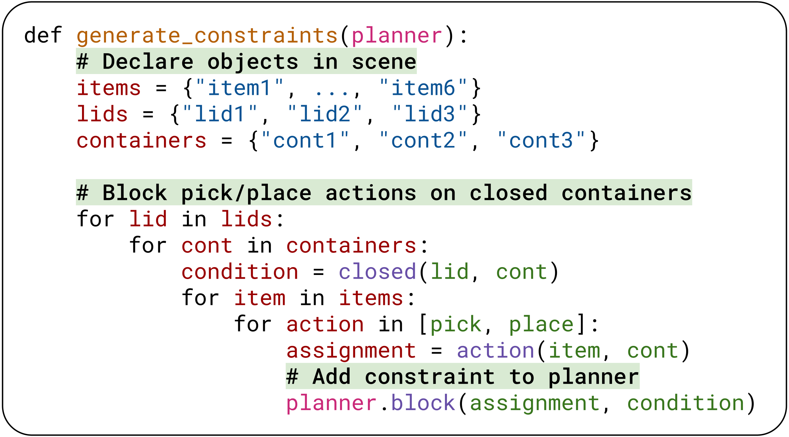
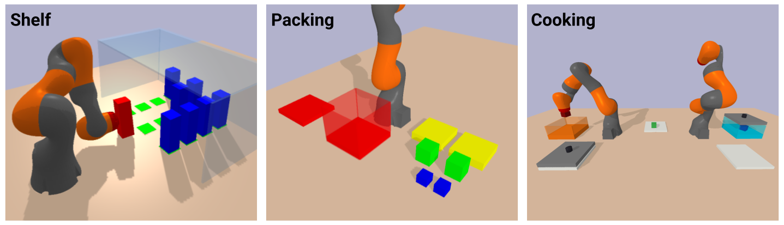
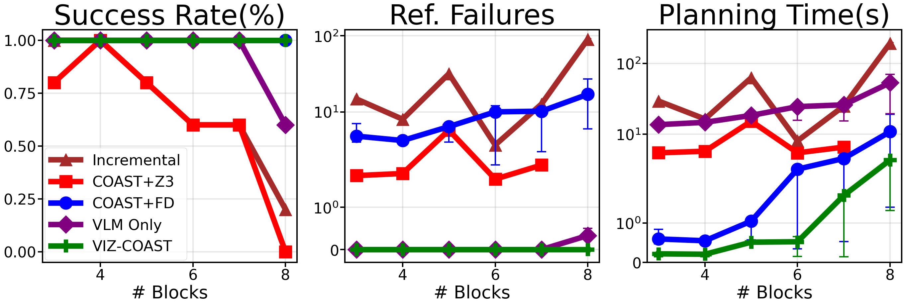
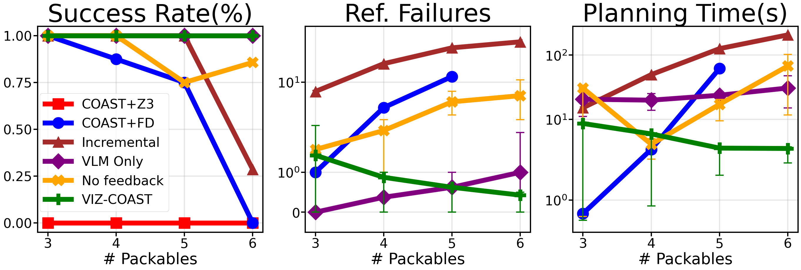
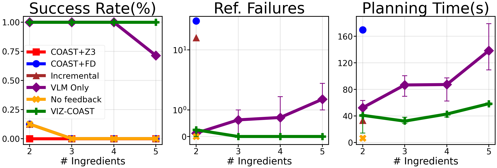

In task and motion planning, high-level task planning is done over an abstraction of the world to enable efficient search in long-horizon robotics problems. However, the feasibility of these task-level plans relies on the downward refinability of the abstraction into continuous motion. When a domain's refinability is poor, task-level plans that appear valid may ultimately fail during motion planning, requiring replanning and resulting in slower overall performance.
Prior works mitigate this by encoding refinement issues as constraints to prune infeasible task plans. However, these approaches only add constraints upon refinement failure, expending significant search effort on infeasible branches. We propose VIZ-COAST, a method of leveraging the common-sense spatial reasoning of large pretrained Vision-Language Models to identify issues with downward refinement a priori, bypassing the need to fix these failures during planning.
Experiments on three challenging TAMP domains show that our approach is able to extract plausible constraints from images and domain descriptions, drastically reducing planning times and, in some cases, eliminating downward refinement failures altogether, generalizing to a diverse range of instances from the broader domain.

VIZ-COAST consists of three components:
On a new problem, the task planner applies the constraints to block infeasible task plans. After K refinement failures, the VRM revises its constraints using the cached failure feedback.





Success rate, average time per constraint update (Prompting), and average total downward-refinement failures over 20 independent trials of 4 sequential Shelf problems with 4–7 blocks. Metrics are averaged over runs in which all problems succeeded.
| VLM | Success | Prompting (s) | Ref. failures |
|---|---|---|---|
| Gemini 3.5 Flash (high) | 100% | 49.41 ± 8.36 | 0.70 ± 0.57 |
| Gemini 3.5 Flash (medium) | 100% | 39.91 ± 9.61 | 0.55 ± 0.94 |
| Gemini 3.5 Flash (low) | 100% | 22.87 ± 4.37 | 0.10 ± 0.31 |
| Gemini 3.5 Flash-Lite (low) | 100% | 6.28 ± 2.20 | 7.05 ± 8.87 |
| GPT-5.6 Terra (high) | 100% | 81.17 ± 26.70 | 0.45 ± 0.51 |
| GPT-5.6 Luna (medium) | 100% | 55.31 ± 36.85 | 0.85 ± 1.23 |
| GPT-5.6 Luna (low) | 100% | 25.24 ± 9.77 | 2.22 ± 6.03 |
| Qwen 3.7 Plus (medium) | 100% | 236.15 ± 84.42 | 0.35 ± 0.49 |
| Qwen 3.5 Flash (medium) | 73% | 241.83 ± 108.52 | 1.38 ± 0.89 |
@misc{yan2025vizcoast,
title = {Using {VLM} Reasoning to Constrain Task and Motion Planning},
author = {Yan, Muyang and Mengdibayev, Miras and Floros, Ardon and Guo, Weihang and Kavraki, Lydia E. and Kingston, Zachary},
year = {2025},
eprint = {2510.25548},
archivePrefix = {arXiv},
primaryClass = {cs.RO},
}